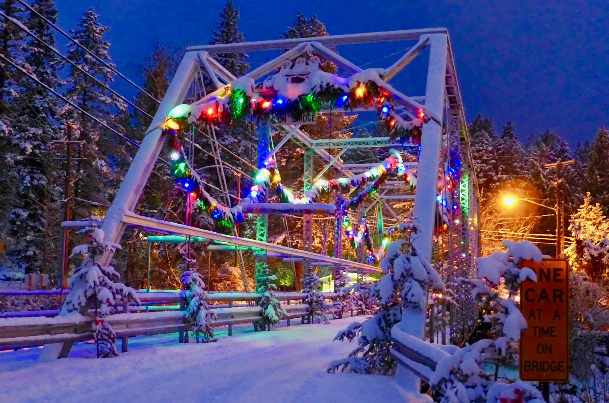

Bigfork is the opitome of a Hallmark town. You know the cheesy movies where the protagonist has to come home and save their family bakery before Christmas eve? Yeah, Bigfork could easily be the setting of one of those movies. In all honesty though, Bigfork is very adorable during the winter seasons.
I do, however, have qualms about the winter time. I love making snowmans, going sledding or ice skating, and watching the Christmas lights turn on around the valley. I do not like, however, driving on snowy roads. I always get nervous when I see that snow collect on the roads for fear of spinning out. But winter in Bigfork is always breathtaking.